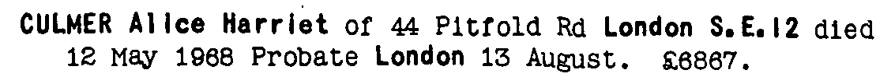

Alice Harriet Culmer 1880 - 1968
[ Home ] | [ Calendar ] | [ Surnames Index ] | [ Errors ] | [ Family History ]A domestic general servant and the child of Charles Culmer (a coal dealer) and Mary Lawrence, Alice Culmer, the second cousin twice-removed on the mother's side of Nigel Horne, was born in Faversham, Kent, England on 29 Jun 18801,2,3,4 and baptised there on 21 Jul 1880.
During her life, she was living at 56 Tanners Street in Faversham on 3 Apr 18811 - less than a mile from her aunt Julia, brother George Culmer, brother Frederick Culmer, mother Mary Lawrence who were living at 2 Mill Place in Faversham and her cousin on her father's side Louisa Jordan, cousin on her father's side Frederick Jordan who were living at 2 Mill Place in Faversham - and on 5 Apr 18912; at Blackheath Hill, Lewisham, London, England on 31 Mar 19017; at Elmside, Dartmouth Place in Lewisham on 2 Apr 19116; at 19 Bromley Common, Bromley, Kent, England on 29 Sept 19393; and at 44 Pitfold Road, Lee, London in 1968.
She died on 12 May 1968 in Lewisham5.
Parents
- Charles was born c. Nov 1855
- Mary Ann was born on 23 Jan 1853
Citations
- 1881 England, Wales & Scotland Census - Findmypast (was age 0 and the daughter of the head of the household)
- 1891 England, Wales & Scotland Census - Findmypast (was age 10 and the daughter of the head of the household)
- 1939 Register - Findmypast (was recorded at this address)
- England & Wales births 1837-2006 - Findmypast
- England & Wales deaths 1837-2007 - Findmypast
- 1911 Census for England & Wales - Findmypast (was age 30 and a servant in the household)
- 1901 England, Wales & Scotland Census - Findmypast (was age 20 and a servant in the household)
Media
Alice Culmer - probate

England & Wales births 1837-2006 - BMD/B/1880/3/AZ/000133/232
1911 Census for England & Wales - GBC/1911/RG14/02731/0069/4
1901 England, Wales & Scotland Census Transcription - GBC-1901-0006489577
1939 Register Transcription - TNA-R39-1238-1238I-041-32
England & Wales deaths 1837-2007 Transcription - BMD-D-1968-2-AZ-000199-010
Family Tree

Map
Generated by ged2site. Last updated on Jul 3, 2024
Known Issues
Residence record for 1968 contains no citation